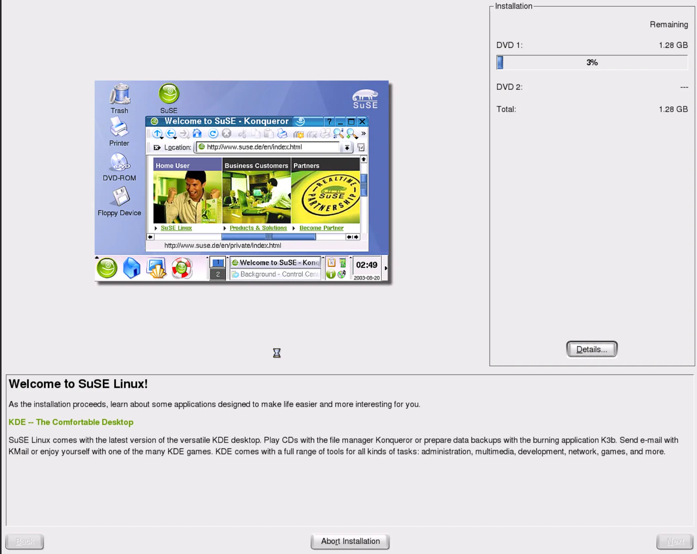
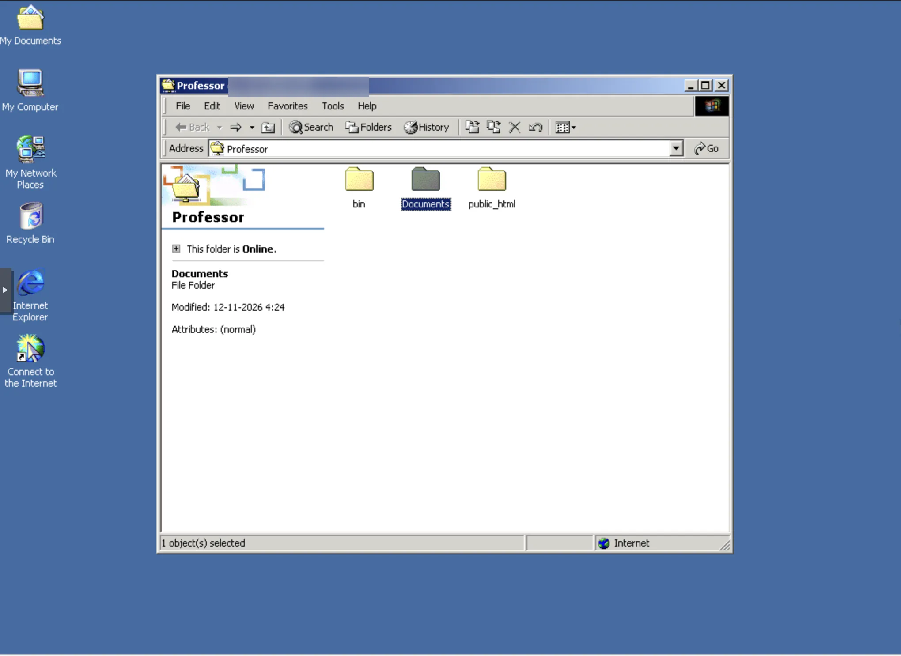

Porquê experimentar o SuSE Linux 9.0?
O SuSE Linux 9.0 é uma distribuição de 2003. Foi escolhida para recriar um servidor Linux da geração do Windows 2000 e comparar a administração de partilhas com a experiência anterior de Red Hat 7.1 e Windows NT 4.0. O objetivo é estudar redes e serviços, não apresentar um servidor moderno ou seguro para produção.
COMUM, da separação de permissões entre contas e da correção definitiva do comportamento do rato.Máquina virtual destinada ao SuSE Linux 9.0, com SeaBIOS, máquina i440fx, disco IDE de 8 GB e placa RTL8139.
Bridge virtual vmbr71, sem gateway configurado. No artigo usam-se endereços fictícios da rede 10.10.71.0/24.
Windows 2000 numa máquina virtual de testes.
Samba 2.2.8a para disponibilizar partilhas SMB a clientes Windows.
Instalação com o YaST
A imagem de instalação do SuSE 9.0 foi associada ao leitor de DVD virtual da VM. O instalador gráfico YaST iniciou, permitiu avançar no particionamento e começou a instalar os pacotes do primeiro DVD. Na captura, o processo estava ainda a 3%, com aproximadamente 1,28 GB por instalar. Posteriormente, a instalação foi concluída e o sistema arrancou.

Hardware virtual e compatibilidade
Foram utilizadas opções de emulação adequadas a um Linux antigo: firmware SeaBIOS, chipset i440fx, disco IDE e placa de rede RTL8139. O rato chegou a funcionar, mas ficou desalinhado relativamente ao ponteiro da consola, uma limitação observada no acesso gráfico pelo Proxmox. Durante a instalação, optou-se por continuar com o teclado quando necessário.
Rede virtual: identificar e corrigir um endereço errado
O SuSE foi ligado à vmbr71, mas a primeira configuração da interface utilizou por lapso uma sub-rede diferente. O Proxmox conseguia comunicar com a própria bridge, mas não alcançava a VM. A verificação de ifconfig -a revelou o erro; após corrigir o IP, o ping passou a funcionar.
Exemplo de configuração para estudo
Para proteger os endereços internos do laboratório, os exemplos abaixo usam a rede fictícia 10.10.71.0/24, que não corresponde literalmente à configuração privada utilizada.
SuSE 9.0: 10.10.71.22/24
Proxmox: 10.10.71.111/24
Bridge: vmbr71
Gateway: nenhumQuando duas máquinas estão na mesma rede virtual e na mesma sub-rede IPv4, podem comunicar diretamente, sem router. A bridge encaminha quadros Ethernet; não substitui a configuração correta de IP e máscara.
Comandos de verificação
ifconfig -a
ping -c 3 10.10.71.111O comando seguinte exemplifica a correção temporária do IP. Os valores devem ser adaptados à rede utilizada:
ifconfig eth0 10.10.71.22 netmask 255.255.255.0 upAs alterações realizadas com ifconfig não substituem a configuração permanente do sistema pelo YaST ou pelos ficheiros de rede.
SSH: comunicar entre um cliente atual e um servidor antigo
Depois de existir conectividade IP, o Proxmox tentou uma sessão SSH para o SuSE. O servidor antigo ofereceu algoritmos de troca de chaves já desativados por omissão nos clientes modernos. Foi necessário permitir compatibilidade apenas na ligação a esta VM. A sessão SSH acabou por funcionar, o que permitiu copiar comandos sem depender da consola gráfica.
ssh -oKexAlgorithms=+diffie-hellman-group1-sha1 \
-oHostKeyAlgorithms=+ssh-rsa \
root@10.10.71.22Samba 2.2.8a: do cliente ao servidor de ficheiros
O SuSE tinha inicialmente o pacote samba-client e módulos de administração do YaST, mas não o pacote servidor samba. Por isso, os comandos de arranque do serviço não estavam disponíveis. Depois de instalar o pacote de servidor, o smbclient conseguiu consultar o Samba local, identificando a versão 2.2.8a-SuSE e o grupo de trabalho TUX-NET.
Verificações úteis
rpm -qa | grep -i samba
rpm -q samba
testparm -s
ps aux | grep -E '[s]mbd|[n]mbd'
smbclient -L localhost -U professorsmbd responde às operações de partilha de ficheiros; nmbd presta serviços históricos de nomes NetBIOS. O pacote samba-client, por si só, não transforma o Linux num servidor de ficheiros.
Contas, grupos e permissões
Foram criadas contas de laboratório professor, aluno1, aluno2 e aluno3, com o grupo turma. As pastas foram preparadas sob /srv/escola/. A pasta COMUM estava atribuída a professor:turma com permissões 2770: o grupo tinha acesso, e o bit setgid fazia os novos elementos herdarem o grupo do diretório. Estas permissões, porém, não bastam se a partilha não estiver publicada corretamente no Samba.
/srv/escola/PROFESSOR
/srv/escola/COMUM
/srv/escola/ALUNOS/aluno1
/srv/escola/ALUNOS/aluno2
/srv/escola/ALUNOS/aluno3professor através da secção [homes]. A pasta reservada /srv/escola/PROFESSOR inicialmente pertencia a root:root e exigiu correção de proprietário. Uma partilha com o mesmo nome da pasta pessoal pode tornar a identificação da origem dos ficheiros confusa.Primeiro teste com Windows 2000
O Windows 2000 conseguiu abrir uma partilha chamada professor no servidor SuSE. A captura apresenta os diretórios bin, Documents e public_html, consistentes com uma pasta pessoal do utilizador. Isto comprova acesso SMB à partilha pessoal, não valida ainda a partilha reservada que se pretendia criar.

O que continuou por resolver
O acesso à partilha COMUM falhou. Num teste local, o comando smbclient //localhost/COMUM -U professor -c 'ls' devolveu NT_STATUS_BAD_NETWORK_NAME, indicando que o nome da partilha não estava disponível na configuração carregada ou não podia ser ligado naquele momento. A resolução definitiva não foi demonstrada nesta experiência.
Como diagnosticar numa próxima sessão
- Confirmar que
testparm -slista efetivamente a secção[COMUM]. - Verificar se o caminho
/srv/escola/COMUMexiste e se o utilizador pertence ao grupoturma. - Recarregar o serviço e repetir
smbclient //localhost/COMUM -U professor -c 'ls'. - Só depois testar pelo Windows 2000 e confirmar leitura e escrita com contas diferentes.
Resultados e continuação do laboratório
Instalação do SuSE 9.0, arranque, deteção de eth0, comunicação na rede virtual, acesso SSH com opções de compatibilidade, servidor Samba a responder e leitura da partilha pessoal no Windows 2000.
Partilha COMUM, provas de escrita, isolamento de permissões entre aluno e professor, melhoria definitiva do rato e validação dos serviços após reinício.
Este registo acompanha a experiência de Red Hat Linux 7.1 + Samba com Windows NT 4.0, onde foi confirmada a criação de uma pasta a partir do cliente Windows. Nos dois casos, os serviços utilizam protocolos históricos que devem permanecer numa rede virtual de testes isolada.